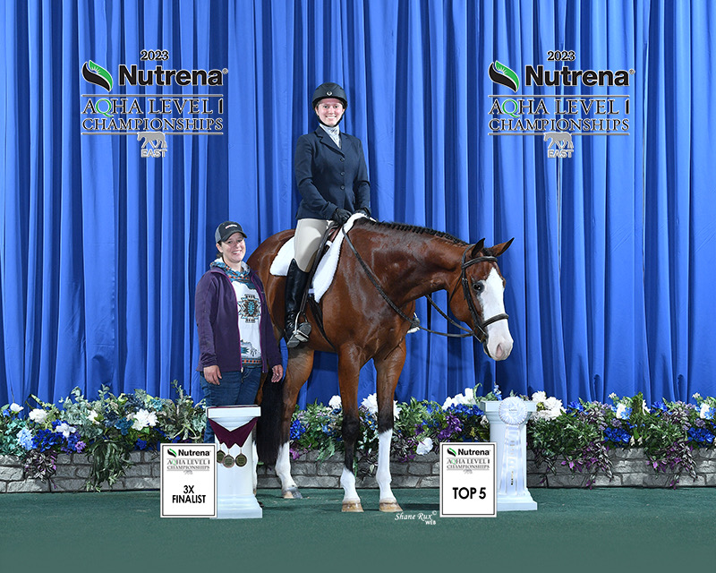
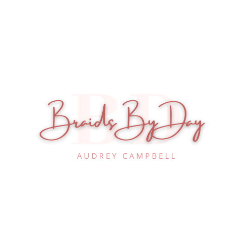
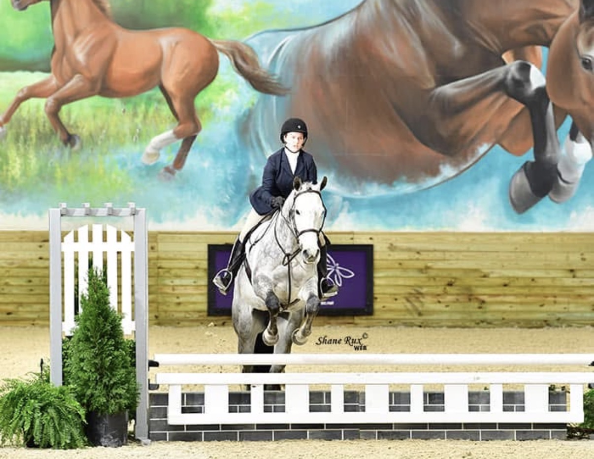
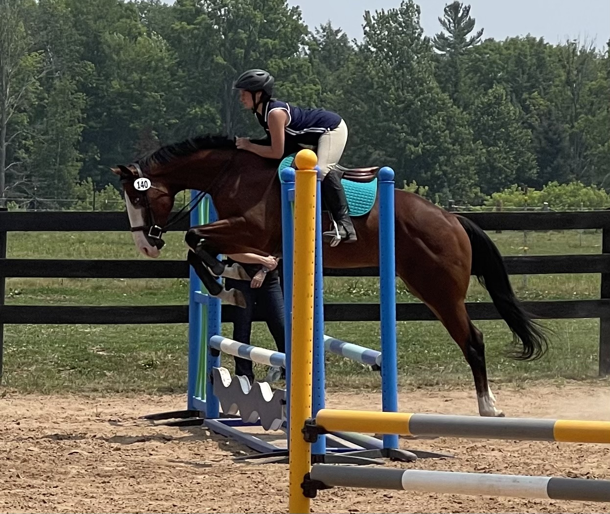

Audrey Campbell
Hi, My name is Audrey! I've created this site as a "one stop shop" educational resource for your equestrian needs.
I grew up showing horses throughout my youth and into my adult years, well, the adult years I've lived through so far. I started out over a decade ago dreaming of being a profesional barrel racer, tried out every discipline possible, and finally found my love for AQHA, NSBA, and APHA. This brought me to current day where i've placed top 10 and top 5 at the top levels with minimal exposure. I often catch-rode the young horses for my trainer's clients, so I spent a majority of my show career creating the finished horse rather than riding them.
Experience
Penelope
"Waitin For Details" is my personal show and foundation horse for Audrey Campbell Performance Horses. She is a 2022 AQHA/APHA mare out of Wait a Darn Minute. Showcasing elegance, power, a very easy going demeanor, and excellent conformation, Penelope has quickly gone from being simply a college project to the horse I will be putting my future behind.

Braids By Day
My personal small grooming business where I specialize in hunter under saddle show turnout. I have been braiding tails for almost 5 years and manes for 3. I offer numerous choices for owners to truly customize their look. From charms, colorful yarn, and braid finishes such as wrap around and pinwheels, I aspire to give exhibitors the exact silhouette they want to be show pen ready.

Assistant Trainer and Show Groom
Throughout high school I traveled with a trainer across the country prepping horses for the show ring. When I wasn't riding, I was second in command to the head trainer and was in charge of helping students get ready for the show pen, school fences, and give pep talks. As a groom I often found myself at the barn before shows thinning manes, braiding/banding manes, as well as putting the finishing touches on horses before they stepped in the ring. I became a master at applying hoof black while in my white show clothes to be show ready! I highly don't recommend doing this unless absolutely necessary, but I prefer to play my chances.
I spent a majority of my high school years learning virtually and spending most of my time learning the ins and outs of equine and facility management. At the show barn I assissted at, I taught lessons to a wide demographic of people in terms of age, experience, and learning abilities. Through these lessons I learned not only how I teach, but how to adapt my teaching style to better suit my students to give them the best learning outcome.
Why The Warmup Ring?
As someone who had a trainer at their disposal but has now gone on my own, I realize just how much knowledge I took for granted. Like, have you ever gone to a show and wondered, "How is it even possible for those legs to be that WHITE?!"? Then this is the place for you! PS, the answer is a deadly combination of clipped legs, spray paint, chalk, and baby powder.
Having grown up around horses, I started noticing early on that there's a high level of classism and elitism in the community. The discouraging fact is that it's not even concentrated to the top 1%, even my local county fair had unnecessary competition and it felt more like a war zone than a 4H event.
When I went to college, I felt lost. I knew I had a place in the equine industry, but I also knew I wanted to make an impact, which is where "The Warmup Ring" comes in! I want to make this into an educational platform where everyone can find a bit of knowledge. The barrier of entry to the national level isn't always money, sometimes it's simply that DIY youth or amateurs don't have a professional near them to learn from. Due to this disparity, there's an entire population of riders who are barred from joining in on the fun of state or national level shows. This is wheere I want to make my mark. I want to help empower riders to believe in themselves, provide a comprehensive space to learn, and access to advice and articles from professionals in their field!

